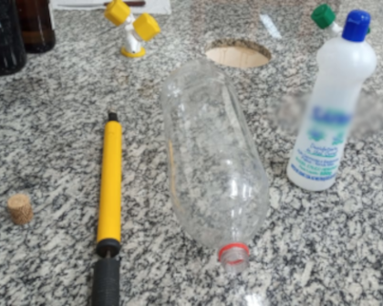

O seguinte trabalho possui como objetivo apresentar o conceito de gás ideal e o comportamento de um gás real, utilizando recursos simples.
Material e métodos
Vai ser utilizado uma garrafa pet 3 L, rolha, 100 ml de álcool e uma bomba de ar manual, 15 a 25 ml do líquido vai ser adicionado na garrafa que logo em seguida será vedada pela rolha, uma vez fechada, o conjunto será agitado até que a maior parte do líquido esteja no estado gasoso e então a rolha será perfurada, abrindo caminho para injeção de ar pela bomba manual, e enfim haverá a remoção da rolha.

Resultado esperado
Tendo como base a formula VP = nRT se espera que a variação de n cause um aumento na pressão que consequentemente causara um aumento na temperatura (segundo a lei de Gay-Lussac),
espera-se que a mudança brusca de temperatura e pressão causada pela retirada da rolha cause a condensação do gás, causando uma fumaça e também há o intuito de gerar a curiosidade e promover a difusão do conhecimento nesse campo da física.
Conclusão
A relação que diz que a temperatura aumenta junto a pressão foi comfirmada além da pressão ter elevado junto ao aumento do número de moléculas de gás inseridas na garrafa. O gás real analizado agiu como esperado, quando a temperatura foi alterada bruscamente, suas interações intermoleculares foram confirmadas pela condensação, transição de fases que é uma característica de gases reais.
Gás ideal e gás real
Em resumo, para conseguir o título de gás ideal o mesmo não deve possuir interações intermoleculares, sendo aqueles que fogem a esta regra chamados de gases reais. Justamente pelo fato das moléculas de gases reais atrairem umas as outras, elas possuem a capacidade de alterar seu estado físico. Apesar de serem praticamente o oposto dos gases ideais, os reais podem agir como eles a certa temperatura e pressão, assim se pode usar a fórmula VP = nRT, que é a união de outras leis, para determinar os valores das grandezas relacionadas aos gases, já que a mesma oferece valores satisfatórios.